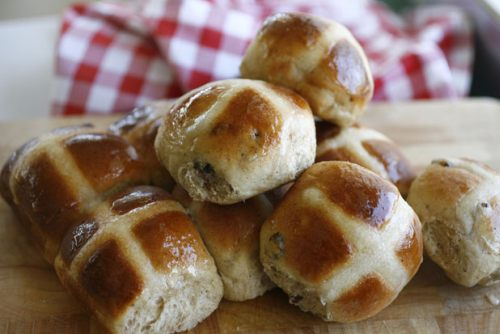

Hot Cross Buns

Ready right out of the oven
Ingredients
- 1 cup scalded milk
- 1 tablespoon granulated sugar
- 1 package dry or compressed yeast
- 3 1/4 cup sifted flour
- 1/4 cup butter
- cup granulated sugar
- egg, well beaten
- 1/4 teaspoon salt
- 1/4 cup raisins
Steps
- Dissolve yeast and 1 tablespoon sugar in milk,
which has been scalded and cooled to lukewarm.
- Add 1 1/2 cups flour and beat until smooth.
- Cover and let rise in a warm place until light about 1 hour.
- Cream butter and sugar
- Add well beaten egg and salt. Add these to above
and then blend in floured raisins and the remaining
flour to form a soft dough.
Knead lightly on a board; place in a greased
bowl. Cover and let rise in a warm place until
double in bulk about 2 hours. Then shape with
hands into medium-sized round buns; place in well
greased pans about 2″ apart. Cover and let rise
about 1 hour. Glaze top with egg diluted with water.
Use a sharp knife to cut a cross in the top of each bun.
Bake at 400F for 15 to 20 minutes. Just before removing
from the oven, brush the tops with sugar moistened with
water. While hot, fill the cross with plain frosting.